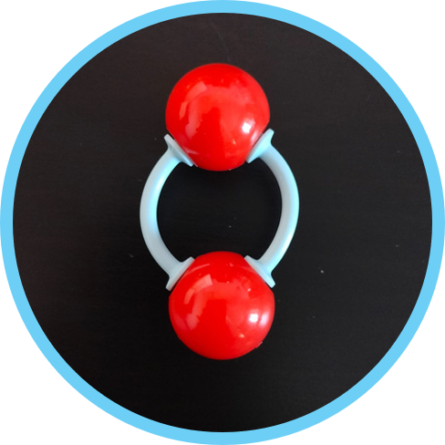

| NOMBRE DEL COMPUESTO | FORMULACIÓN | CONSTRUCCIÓN DE LA MOLÉCULA | PORCENTAGE |
|
MOLÉCULA DE HIDRÓGENO |
H₂ |
H=H |
|
|
MOLÉCULA DE OXÍGENO |
O₂ |
 O=O |
|
|
ÁTOMO DE SODIO, POTASIO, OXÍGENO, HIDRÓGENO, HELIO |
Na, K, O, H, He |
|
|
|
MOLÉCULA DE VAPOR DE AGUA |
H₂O |
|


PREGUNTAS:
- Compara la atmósfera de Mercurio con la de la Tierra. ¿Sería posible al ser humano respirar en la atmósfera de Mercurio?
- Compara la atmósfera de Mercurio con la de Marte